(Click here to download my Security-Interop-Sample)
(Click here for downloading the presentation)
While I am here at PDC studying the most exciting new stuff from Microsoft around Software+Services and much more interesting platform-enhancements (Dublin, Velocity, Geneva etc.) I promised about more than a week ago at the DevCamp 2008 conference in Vienna that I will publish some details about a demo on security I've shown in my session about applying concepts from the Identity Meta System Vision in the real world for heterogeneous environments.
The session itself was all about taking the separation of concerns in terms of authentication and authorization that is proposed by federated identity patterns. Furthermore it was about learning, how this SoC can help you solving real world problems when it comes down to implementing security in your solutions.
Click here for downloading the presentation. I'd strongly recommend you do this before moving on in this post!
In the last demo I've shown a Security Token Service (STS) written with Microsoft Codename "Zermatt" that authenticates requests coming from a .NET-based client application through Windows Authentication and transforms the (proprietary;)) Windows-token into a standards-based SAML-token. Why that? Well, non-Windows based platforms won't be able to deal with a proprietary Windows-token for authorizing requests - especially if they're not running on Windows. But they will be able to work with SAML as it is just a signed XML with information about an authenticated user proofed by an identity provider (the security token service). The following picture shows the scenario I've implemented:
{kind=link}
In this post I give you a step-by-step guide how-to setup the samples which you find for download under the following link:
Click here to download my Security-Interop-Sample
In the following sections I summarized the pre-requisites and steps you need to complete for making the sample above work!
Installation Pre-Requisites
- Microsoft-Part of the Sample
- Visual Studio 2008 with SP1 installed
(Service Pack 1 download here) - .NET Framework 3.5 (with SP1 installed)
- Microsoft “Zermatt” (now Geneva Identity Framework) CTP
(I have included the version of Zermatt-CTP that I've used for developing the sample in the download so that at later point of times you can try this in an isolated environment without bothering with some breaking changes in Zermatt at first place;)) - Java-Part of the Sample
- Java2 SDK 1.5.0 with Update 15
- Netbeans 6.5 Beta IDE with Glassfish v2
- JCE Policy Files installed
- Dom4j 1.6.1 and Jaxen 1.1.1 installed
- Appropriate Java environment variables set for command prompts. For this purpose I added a sample “Java Command Prompt” batch file to the download (located in the "Pre-Requisites\Java"-directory). You need to adopt it based on your installation-path values on your machine.
Steps to make the Microsoft / .NET Side running:
- Install the certificates using Zermatt Samples Utilities
The necessary batch-files for doing so are located in the Zermatt Directory (typically “C:\Program Files\Microsoft Code Name Zermatt\Samples\Utilities”) – execute the SamplesPreReqSetup.bat in a Visual Studio Command Prompt as Administrator. - Run Visual Studio 2008 as Administrator and open the SimpleSTSForActiveClients-VS2008.sln Visual Studio 2008 solution located in the “<your working folder>\DevCamp\Simple STS For Active Clients” directory. This is a modified and extended version of the standard Simple Active STS sample included with Microsoft Code Name “Zermatt”.
- Right-click the solution and configure the startup-projects so that the STS, the .NET-based test service and the test-client start-up as shown in the following screen-shot:
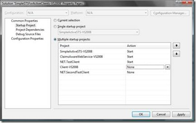 - Try the solution by pressing CTRL-F5 in Visual Studio to run everything without debugging. Important is that you follow the following steps in the running applications:
- In the “ClaimsAwareWebSErvice-VS2008”-project enter “1” to take the included simple active STS as a security token service.
- In the client application type in “net” to call the .NET-based service and verify whether the STS and the .NET-based service as well as the client are working properly on your machine!
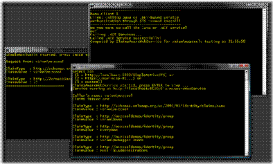
{kind=link}
{kind=link}
Make the Java-Side working
Now, after the .NET-based solution is running, we can move forward by making the Java-version of our claims-based web service running. For that purpose follow the subsequent steps:
- First of all run Netbeans Developer studio as administrator and make sure that all application server references are registered with your IDE. With the Netbeans 6.5 beta I’ve installed, just Glassfish v3 was included in the server list. So you need to add Glassfish v2 (which is the one I’ve tested the service with) to your services list. For that purpose follow the next sub-steps but note that by default Netbeans should create a personal domain during the installation of the IDE:
- In the left panel switch to the services tab and open the “Servers” tree-view element.
- Right-click the “Servers”-node and select “Add Server”
- Select “Glassfish V2” from the list and leave the name below as it is.
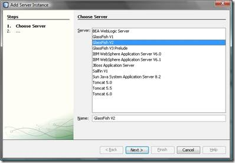 - Create a personal domain for the application server that will install some configuration files in your local user profile. These files also will include the certificate store for your development instance of the app-server.
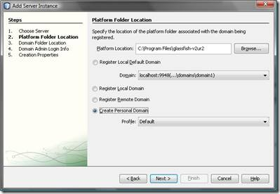 - Select a folder for the development domain where you would like to install the configuration files to as shown in the following screen (note that there it will be “D:\Data\.testDevDomain” which is what I will refer to later on, as well)
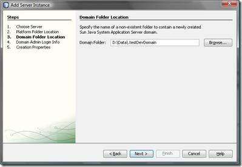 - Then you will have to select an administrator user name and a password and afterwards you will need to specify the ports on which the server is running. Make sure that nothing else runs on these ports and note the ports as you will need them later on.
- Then open the Java-project I’ve included in the samples-download. This project is located in the “<your working folder>\DevCamp\JavaWebHostNew” directory. Just let Netbeans point to that directory in the open-project dialog and it will detect that this is a Netbeans-project, automatically.
- You probably will need to update a few references to point to dom4j and Jaxen as I use these libraries for some XML processing in the test application. Netbeans will warn you if you need to update the references. If so, switch to the “Projects” tab in the panel on the left, navigate to your project “JavaWebHostNew” and within there on the libraries-node. Right-click the “Libraries”-node and select “Add Jar / Folder” from the context menu. Add the “dom4j-1.6.1.jar” and the “jaxen-1.1.1.jar” files as libraries this way to your project. I’ve included them in the download in the “<your working folder>\DevCamp\Pre-Requisites\Java” directory”. Also remove all broken references from the project by right-clicking the project and going to the properties:
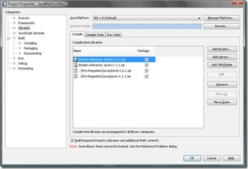 - After all libraries and references are set-up correctly, you should be able to compile the solution using Netbeans, successfully. Next we can start configuring the application server appropriately to make this stuff running.
- Next we need to install the Java cryptography policy extensions (JCE) with Java to be able to work with our certificates. For this purpose copy all files from the “<your working folder>\ DevCamp\Pre-Requisites\Java\jce”-directory to the “C:\Program Files\Java\jdk1.5.0_15\jre\lib\security”-directory and overwrite all files.
- Now we need to install certificates for the two sides of the application – first the Java-service needs to be able to trust the STS and therefore it needs to have the STS’s public key in its trusted certificates store and second the .NET client and the STS need to have a way to trust the Java service and therefore we need to export the public key from the Java service’s certificate and import it into the Windows certificate store.
- To ensure, that the Java-service is able to trust and validate tokens issued by the STS, execute the following steps on your machine.
- Export the STS certificate from the Windows certificate store as DER-encoded file. Only export the public key. Store the file to a directory of your choice. The certificates are installed in the personal store of the local computer by the previously executed Microsoft Code Name Zermatt Samples Batch-file utilities when setting up the .NET based solution, before. You can get to the machine’s certificate store by starting a management console (mmc.exe) and selecting “File – Add / Remove Snap-In” and then select “Certificates” from the list, click the “Add >” button and then click okay. Make sure that you select “Computer Account” and “Local Computer” when adding the snap-in. You’ll find the certificate as shown in the following screen-shot:
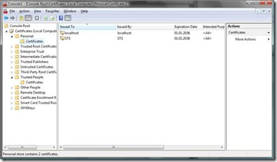 - Import the STS-public key certificate in the trusted certificates store of your Glassfish personal domain by executing the following command (typically the password you have to enter is changeit by default):
keytool -import -alias sts -file sts.cer -keystore "d:\Data\.testDevDomain\config\cacerts.jks"
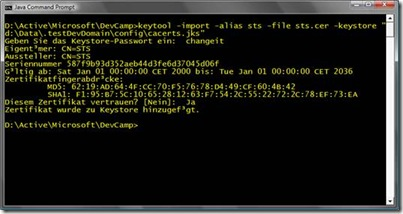 - Next we need to ensure that the STS and the client can trust the Java service. For this purpose we need to export the Java service’s certificate and import it in the Windows certificate store. To do so, follow these steps:
- Execute the following command to export the default service certificate from glassfish with its public key. This certificate is typically called s1as.
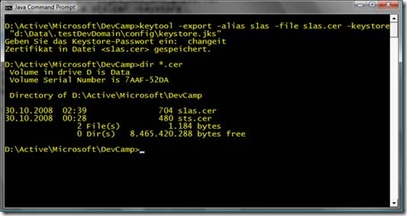 - Now import the certificate in the personal store of the local computer of the Windows Certificate store. Also import the certificate into the trusted people store so that the validation of the certificate can succeed.
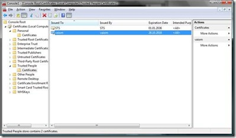 - Before we test the web service solution we need to make sure that the correct WS-Policy configuration is set for the Java Web Service. For this purpose open the “Web Services”-node in your Netbeans-project and double-click the “JavaTestService” Web Service in the project. In the designer then click the “Advanced…” button to open the web service configuration dialog and make sure that it looks as shown in the following two screen-shots:
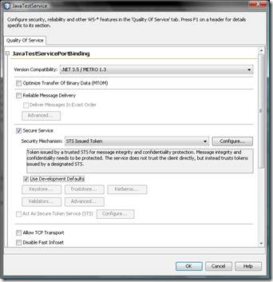 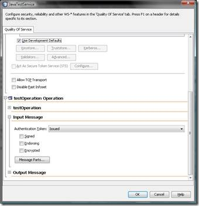 - Finally you can un-deploy and deploy the new service to Glassfish as shown in the following screen-shot.
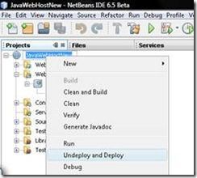 - It’s important that you note the URL on which your web service is listening depending on the ports you configured for your Glassfish application server instance and development-domain. Typically this should appear in the output-window within the Netbeans-IDE for Glassfish as shown in the following screen-shot:
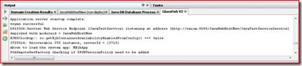
{kind=link}
{kind=link}
{kind=link}
{kind=link}
{kind=link}
{kind=link}
{kind=link}
{kind=link}
{kind=link}
{kind=link}
{kind=link}
{kind=link}
Final steps and then running the application
After you have configured Glassfish, configured the Java Web Service and deployed it, successfully, you can try the interoperability solution between Java and .NET. For this purpose you need to update the .NET test-client’s configuration to point to your running Java web service and then run the application. The URL to the Java-service is configured in the client’s App.config (NET.TestClient in my sample solution) as shown in the following screen-shot:
{kind=link}
Just one last step before running it – you need to update the STS so that it encrypts the SAML-token with the certificate of your Glassfish Java Web service. As these certificates are re-generated for each machine you need to update my code in the sample to make it work. Update the certificate-name in the project “SimpleActiveSTS-VS2008” of my solution in the file “MySecurityTokenService.cs” and change the common name of the certificate to yours (you should only need to replace the machine-name part of the common name which is “vaiom” in my sample and should be “yourmachinename” in your environment):
{kind=link}
After you have updated this one you can try to run the solution and instead of calling the .NET-based service you can call the Java-service by entering “java” instead of “net” when the client asks you which web service it should call. The following screen-shot shows the resulting application in action.
{kind=link}
In the console-windows you can see the .NET-based applications running: the claims-aware web service which is not called in this scenario, the security token service which issues a SAML-token based on the Windows identity the client authenticates with and the client itself that calls the Java service this time. In the background you can see the Netbeans IDE with the Glassfish output Window where clearly the Java application outputs the contents of the SAML token it gets passed from the STS. That SAML token just contains claims extracted from the Windows-token the client authenticated with against the STS. And that way we managed to make security-interoperability happen by transforming a proprietary Windows-token to a standardized SAML-token through an STS and give Java access to the contents of the Windows-token. Of course the Java-application could run on a Linux-box as well and still you would be able to use Windows and AD as the primary identity management system for managing users, groups etc. and include Java-services (or other services) running on any OS with your security-infrastructure as they don’t need to know about any details of the security infrastructure. The only thing they need to know is the Security Token Service which proofs the fact that the user has been authenticated successfully by passing a signed SAML-token through the client to the Java-service. In my opinion that shows one of the things that unveil the real power of a federated identity infrastructure based on the WS-* standards...
If you have any feedback or questions, feel free getting in touch with me through my blog;) ... of course I'd be happy about any feedback:)
Cheers
Mario